Che cos’è un integrale improprio
Un integrale è "improprio" quando non possiamo semplicemente sostituire i due estremi, perché uno di essi è "cattivo". Un estremo è cattivo in due casi: è infinito (l’intervallo non finisce mai) oppure è un punto finito in cui la funzione esplode (→ ±∞) o non è definita.
In entrambi i casi il metodo è lo stesso: si sostituisce l’estremo cattivo con una lettera t, si calcola un integrale normale e poi si fa il limite. Se il limite dà un numero finito → CONVERGE; se cresce senza limite → DIVERGE. Ricorda: "tende a 0" è solo condizione necessaria, non sufficiente.
Tipo 1 — intervallo illimitato (estremo = ∞)
Caratteristiche
L’intervallo va fino a +∞ (o parte da −∞): la "coda" non finisce mai.
La funzione, di solito, è regolare; il problema è solo la lunghezza infinita.
La t sostituisce l’∞ e si fa il limite per t → +∞.
Metodo
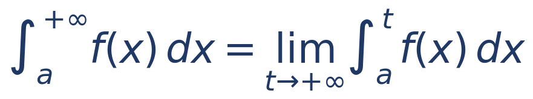
Criterio p (la soglia è α = 1)
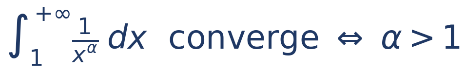
Idea: hai paura della coda infinita, quindi ti serve un esponente GRANDE che schiacci in fretta la funzione. Converge se α > 1.
Esempi
| Integrale | α | Esito | Valore |
|---|---|---|---|
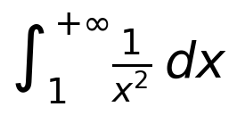 |
2 | converge | 1 |
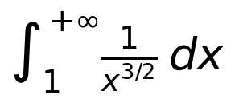 |
3/2 | converge | 2 |
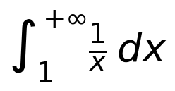 |
1 | diverge | +∞ |
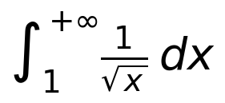 |
1/2 | diverge | +∞ |
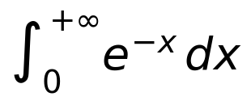 |
— | converge | 1 |
Tipo 2 — funzione illimitata a un estremo
Caratteristiche
L’intervallo è finito, ma in un estremo la funzione esplode (→ ±∞).
Prima cosa: cerchia gli estremi e trova DOVE il denominatore si annulla / la funzione non è definita.
La t va all’estremo cattivo, con la freccia "verso l’interno": t → c⁺ se è in basso, t → c⁻ se è in alto.
Metodo (estremo cattivo in basso, oppure in alto)
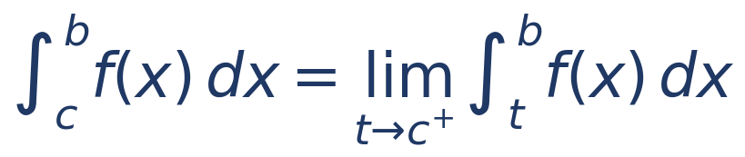
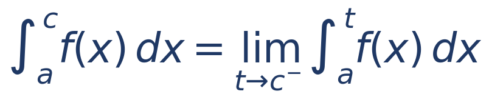
Criterio p ROVESCIATO (la soglia è sempre α = 1)
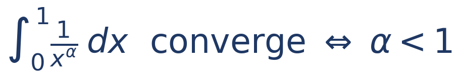
Idea: hai paura dell’esplosione vicino al punto cattivo, quindi ti serve un esponente PICCOLO. Converge se α < 1. È il contrario del Tipo 1: attenzione a non scambiarli.
Esempi svolti (gli esercizi di oggi)
| Integrale | α | Esito | Valore |
|---|---|---|---|
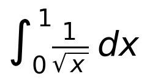 |
1/2 | converge | 2 |
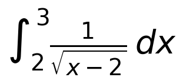 |
1/2 | converge | 2 |
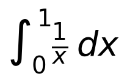 |
1 | diverge | +∞ |
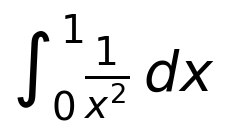 |
2 | diverge | +∞ |
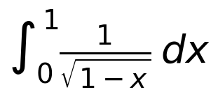 |
1/2 | converge | 2 |
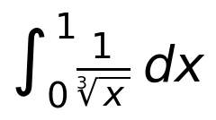 |
1/3 | converge | 3/2 |
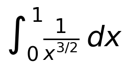 |
3/2 | diverge | +∞ |
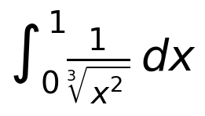 |
2/3 | converge | 3 |
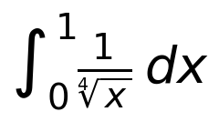 |
1/4 | converge | 4/3 |
Nota: gli Es. 22 e 25 mostrano che l’estremo cattivo non è sempre lo 0 (può essere spostato, come x = 2, o in alto, come x = 1). L’Es. 23 è il caso critico α = 1 (primitiva logaritmo): diverge.
La soglia α = 1: Tipo 1 contro Tipo 2
La stessa soglia α = 1 funziona AL CONTRARIO nei due tipi. È lo scambio più facile da fare all’esame, quindi tienilo a mente con questa immagine:
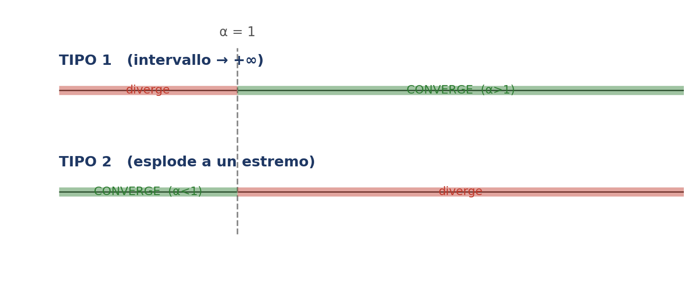
Tipo 1 (coda a +∞): converge se α > 1 — "serve α grande".
Tipo 2 (esplosione a un estremo): converge se α < 1 — "serve α piccolo".
Errori da non fare (checklist)
Doppia negazione: −(−2) = +2. Rallenta sempre sui segni, soprattutto nell’ultimo passaggio.
Valuta la PRIMITIVA agli estremi, non la funzione di partenza.
Scrivi due numeri separati: prima F(b), poi F(a), e sottrai solo alla fine (così non "perdi" un estremo).
Criterio p: soglia α = 1, non α = 0. E ricordati Tipo 1 (α > 1) vs Tipo 2 (α < 1).
Diverge (→ +∞) non è la stessa cosa di indeterminato (oscilla).
Se la funzione è sempre positiva e ti esce un’area negativa → hai saltato un segno (regola-spia).
Negli integrali indefiniti, verifica sempre derivando il risultato.